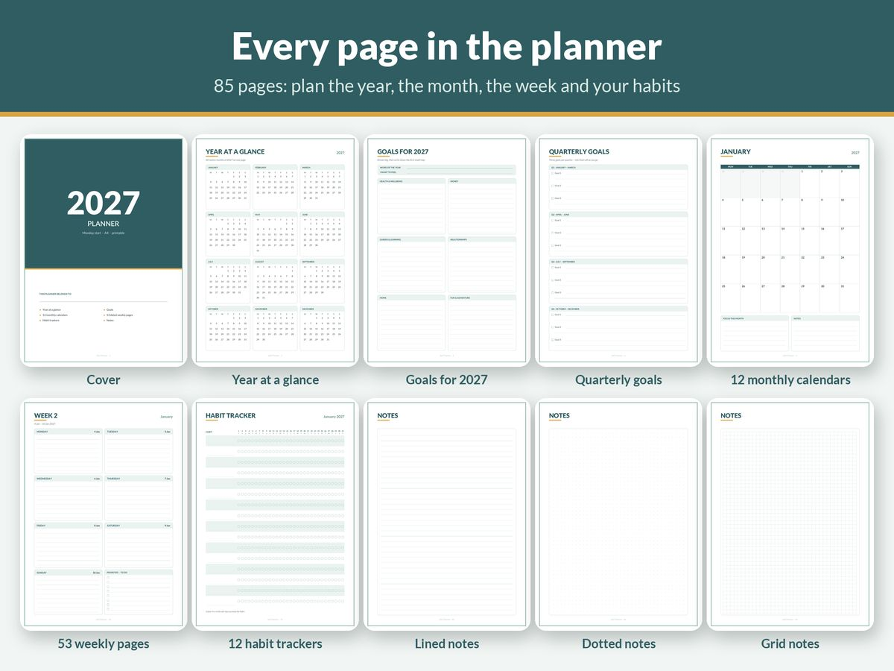

How to Set Up a 2027 Planner You'll Actually Use

Every new year, plenty of fresh planners get filled in carefully for two weeks and then quietly abandoned. That isn't usually a willpower problem. It's a setup problem. The planner was set up as a beautiful record of everything, rather than as a simple tool that earns its place in your day.
This guide shows you how to set up a 2027 planner, paper or digital, so it's still in use in December. The approach is the same whichever format you choose: a small amount of setup, a short weekly routine, and a few rules that keep it light.
First, a few 2027 calendar facts
It helps to know the shape of the year before you plan it:
- 2027 starts on a Friday (1 January) and also ends on a Friday (31 December).
- It isn't a leap year: 365 days, with 28 days in February.
- Under the ISO week-numbering system, 2027 has 52 weeks. ISO week 1 of 2027 begins on Monday 4 January, because the first few days of January belong to the last week of 2026.
That last point matters for weekly pages. If your planner uses Monday-start weeks, the first weekly spread will usually begin in late December 2026, and the last one will run into early January 2028. That's normal. It means every day of the year is covered.
Step 1: Choose the format you'll actually carry
The best planner is the one that's with you when you make plans. Be honest about where that happens.
- Paper (printable or bound): great if you like writing by hand, think better on paper or want a break from screens. A printable planner lets you choose your paper size, print only the pages you use, and reprint a page if you make a mess of it.
- Digital (tablet with a stylus): great if you already carry an iPad or Android tablet everywhere. A hyperlinked PDF planner in an app like GoodNotes or Notability gives you a paper feel with tap-to-jump navigation, unlimited erasing and no extra weight.
- Wall calendar: not a replacement for a personal planner, but the best tool for shared plans. Put one in the kitchen for family events, bin days, school terms and birthdays.
Many people end up with a combination: a personal planner for their own week and a wall calendar for the household.
Step 2: Pick Monday or Sunday start
This sounds trivial, but it changes how your week feels. If your work week is Monday to Friday and you think of weekends as a pair, a Monday start keeps Saturday and Sunday together. If you plan the week on Sunday evening or your week is traditionally Sunday-first, a Sunday start may feel more natural. Choose one and use it everywhere: planner, wall calendar and digital calendar.
Step 3: Do the big-picture pages first (but keep them short)
Set aside an hour at the start of the year. Fill in only these:
Year at a glance. Mark fixed dates: birthdays, anniversaries, public holidays, school terms, planned holidays, big work deadlines, renewals. Don't add goals here yet. This page is for things that will happen regardless.
Goals for 2027. Pick a few life areas, such as health, money, work or learning, relationships, home and fun. Write one meaningful goal for each area you actually care about this year. Leave the others blank. Three good goals beat twelve vague ones.
Quarterly goals. Break each yearly goal into what you'd need to have done by the end of March, June, September and December. Only fill in the first quarter in detail. You'll know far more in April than you do in January.
Step 4: Set up just the first month
Resist setting up all twelve months in January. Instead:
- Copy fixed dates for January only onto the monthly calendar.
- Write the month's two or three priorities: things that, if done, would make the month a success.
- Choose a small number of habits to track this month, ideally ones tied to your goals. Two to five is plenty. A habit tracker full of empty boxes is discouraging.
Repeat this for each new month in your monthly review (Step 6).
Step 5: Build a 15-minute weekly routine
This is the part that makes or breaks a planner. Pick a fixed time each week (Sunday evening and Monday morning are popular) and do the same four things:
- Look back (3 minutes). Tick off what got done last week. Move anything unfinished forward, or cross it out if it no longer matters.
- Check the month (2 minutes). Glance at the monthly calendar and copy this week's fixed events onto the weekly page.
- Choose the week's priorities (5 minutes). Write no more than three to five priorities for the week. Tie at least one to a quarterly goal.
- Rough out the days (5 minutes). Place priorities on specific days, leaving room for the unexpected. An overpacked day is just a list of things you'll move later.
That's it. Fifteen minutes a week is about 13 hours across the year, which is a small investment for a year where you know what you're doing next.
Step 6: Add a monthly review
On the last day of each month, take another 15 to 20 minutes:
- Review your habit tracker. What stuck? What didn't? Drop habits that aren't serving you.
- Check progress on the quarter's goals.
- Set up next month: fixed dates, priorities and habits.
- At the end of March, June and September, fill in the next quarter's goals in detail.
Rules that keep a planner light
Plan, don't record everything. A planner is for decisions about the future. If you also want a journal, keep it separate or use the notes pages.
Write in pencil (or use an erasable pen). Plans change. A planner covered in crossings-out starts to feel like a record of failure.
Allow blank days. Missing a few days, or even a week, doesn't break the system. Just restart at the next weekly review. Don't try to backfill.
Keep one source of truth for appointments. If you use a digital calendar for work meetings, don't copy every meeting into your planner. Write the important ones, or a single line like "busy afternoon".
Make it easy to open. Keep the paper planner where you sit down each morning. On a tablet, put the planner app in your dock and use bookmarks or hyperlinks to jump straight to this week.
Printable planner tips
- Print at 100% / Actual size so margins and date boxes line up.
- Heavier paper (around 100–120 gsm, or card stock for the cover) feels nicer and reduces show-through.
- Use a ring binder or discbound system so you can add notes pages, move pages around and archive past months.
- Print in batches, a quarter at a time, so the binder stays slim.
Digital planner tips
- Import the PDF into your app as a notebook, not as a read-only document, so you can write on every page.
- Test the hyperlinks first: tap a date on the monthly calendar and check it jumps to the right week.
- Use the app's lasso or copy tool to move unfinished tasks forward, which is faster than rewriting.
- Back up your planner regularly. Most apps support automatic cloud backup.
Pick the right 2027 planner for you
All of our 2027 planners are minimal, dated for 2027 and come in both Monday-start and Sunday-start versions:
- 2027 Printable Planner: 85 pages in A4 and US Letter, with year at a glance, goals, quarterly goals, 12 monthly calendars, 53 dated weekly pages, monthly habit trackers and notes. It's built around the setup in this guide.
- 2027 Digital Planner: 100 hyperlinked landscape pages for GoodNotes, Notability and Xodo, with month tabs on every page.
- 2027 Wall Calendar: a cover plus 12 big monthly pages in A4, A3, US Letter and Tabloid, with or without a notes strip. Ideal for shared family plans.
Planning money goals for 2027 too? Our guide on how to budget on an irregular income and the Printable Budget Planner pair well with any planner. New to budgeting? Start with our simple budget template for beginners.
The short version
- Choose the format you'll actually carry, and one week-start for everything.
- Fill in the year at a glance and a few goals, then only the first quarter and first month.
- Do a 15-minute weekly review: look back, check the month, pick three to five priorities, rough out the days.
- Do a monthly review to set up the next month and adjust habits.
- Keep it light: plan rather than record, use pencil, and restart after gaps without guilt.
More guides
- A Simple Budget Template for Beginners (and How to Fill It In)
- How to Budget on an Irregular Income (A Step-by-Step Method)
- Zero-Based Budgeting Step by Step: Give Every Dollar a Job
- Sinking Funds Explained: How to Stop Big Bills Wrecking Your Budget
- How to Budget on a Low Income: A Practical, Judgement-Free Guide
- Debt Snowball vs Avalanche: Which Is Better? (With a Worked Example)
- Small Business Bookkeeping for Beginners: A Simple System for Freelancers and Sole Traders
- Wedding Budget Breakdown by Category: A Practical Starting Split
- How Much Does a Baby Cost in the First Year? How to Estimate and Plan for It
- How to Write a Resume With No Experience (With Examples)